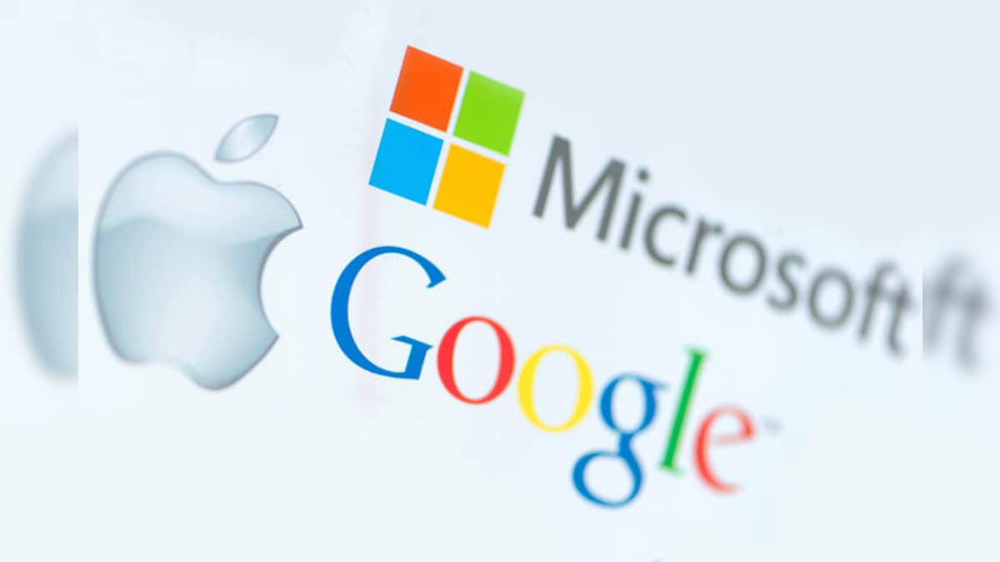

Gigantes tecnológicas querem acabar com as passwords
A confiança apenas nas palavras-passe é decretada como uma grande falha de segurança na Internet, com as pessoas a mantê-las demasiado simples ou a utilizá-las repetidamente para facilitar a gestão de muitas contas. A Apple, Google e Microsoft anunciaram esta quinta-feira que estão a estudar novas formas de segurança digital, deixando de lado as tradicionais palavras-passe. As gigantes tecnológicas americanas anunciaram, em conjunto, o apoio a um padrão comum que irá permitir que as pessoas entrem através do desbloqueio dos seus telemóveis, como o reconhecimento facial ou as impressões digitais. "A mudança completa para um mundo sem palavras-passe começará com os consumidores a torná-lo uma parte natural das suas vidas", disse o vice-presidente da Microsoft, Alex Simons, acrescentando: "Trabalhando juntos como uma comunidade através de plataformas, podemos finalmente alcançar esta visão e fazer progressos significativos no sentido de eliminar as palavras-passe."
Segundo as empresas, a utilização de logins seguros em detrimento das habituais senhas iria enganar esquemas de phishing que enganam os utilizadores, roubando-lhes os dados de acesso, que são depois comercializados. Jen Easterly, diretora da agência de segurança cibernética e de infraestruturas dos EUA afirmou que este é "um marco importante para encorajar as melhores práticas de segurança incorporadas e ajudar-nos a ir para lá das palavras-passe". O apoio a logins sem palavra-passe será analisado ao longo do próximo ano no contexto do navegador Chrome e do software Android, revelou o gestor de produtos da Google (que detém tanto o browser como o software) e presidente da FIDO Alliance, Sampath Srinivas. Também a Apple e a Microsoft anunciaram planos para fazerem o mesmo dentro dos seus ecossistemas digitais. "Isto simplificará as entradas em dispositivos, websites e aplicações, independentemente da plataforma - sem a necessidade de uma única palavra-passe", disse Srinivas numa publicação num blogue, explicando que "para entrar num website no seu computador, será apenas preciso o seu telefone nas proximidades e ser-lhe-á pedido que o desbloqueie para poder aceder".
A eliminação de senhas foi tida como sendo mais segura do que a autenticação de dois fatores que envolve a obtenção de senhas de uma só vez enviadas por texto ou por e-mail como confirmação secundária ao iniciar sessão em sítios ou serviços.